Versión para pantallas grandes: qué significa cada pantalla, cómo se lee la matriz y cómo evaluar a tus médicos.
Las imágenes son de la app real, con nombres y cédulas de ejemplo. Los cortes de 33% y 66% son los que usa la app hoy; el administrador puede ajustarlos.
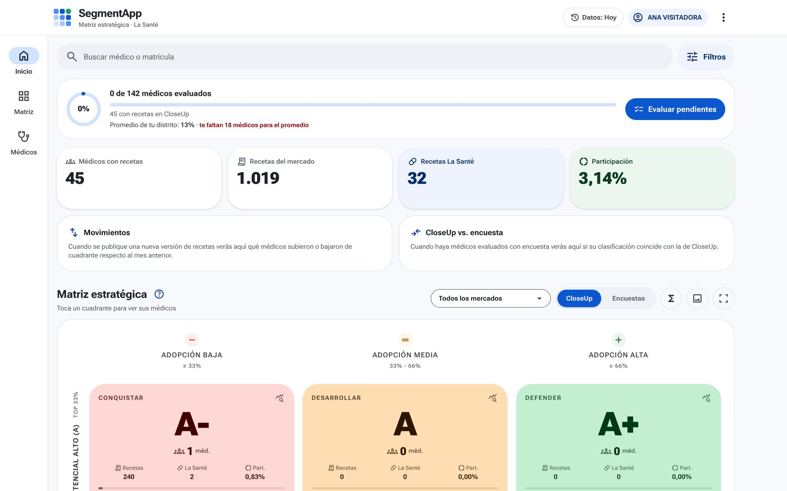
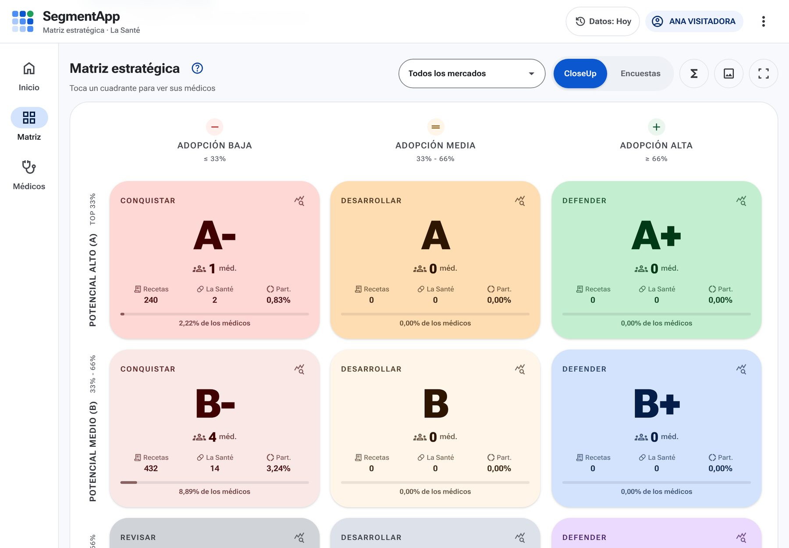
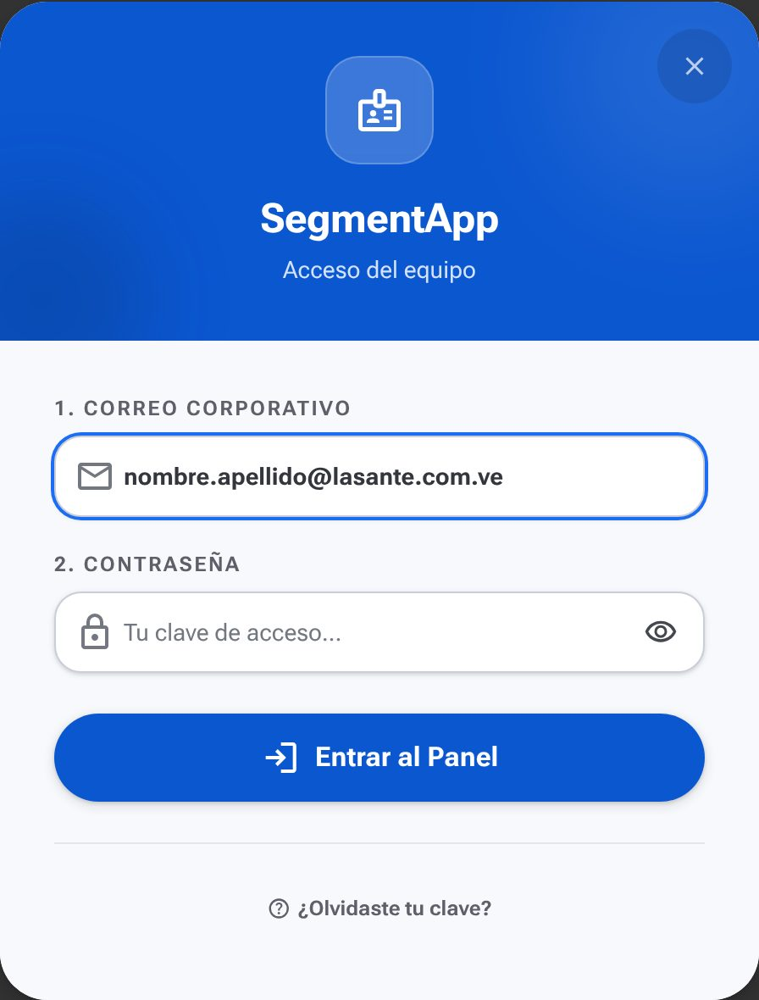
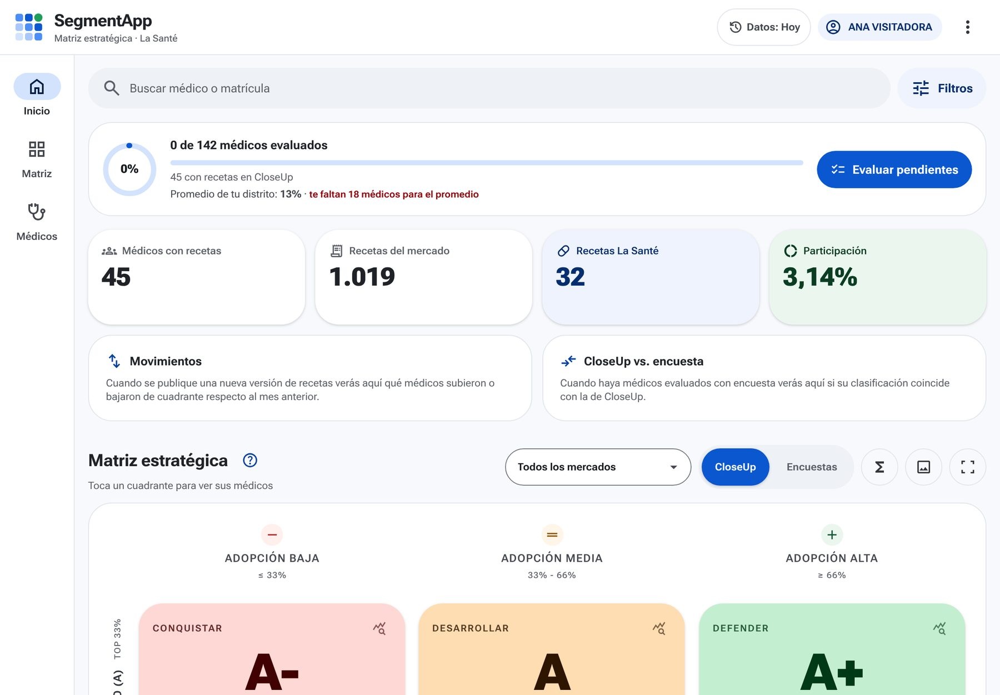
| Indicador | Qué es |
|---|---|
| Médicos con recetas | Tus médicos que tienen recetas en CloseUp. |
| Recetas del mercado | Todas sus recetas en los mercados elegidos, de todos los laboratorios. |
| Recetas La Santé | Cuántas de esas recetas son de nuestros productos. |
| Participación | Recetas La Santé ÷ recetas del mercado: nuestra porción. |
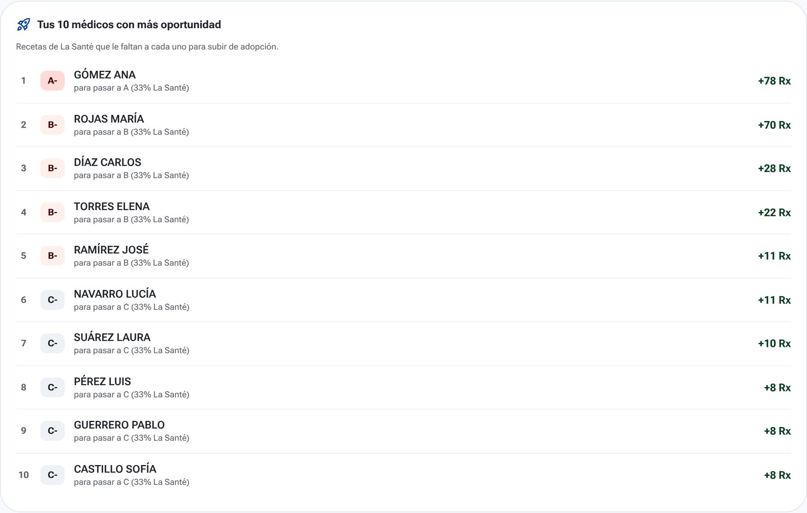
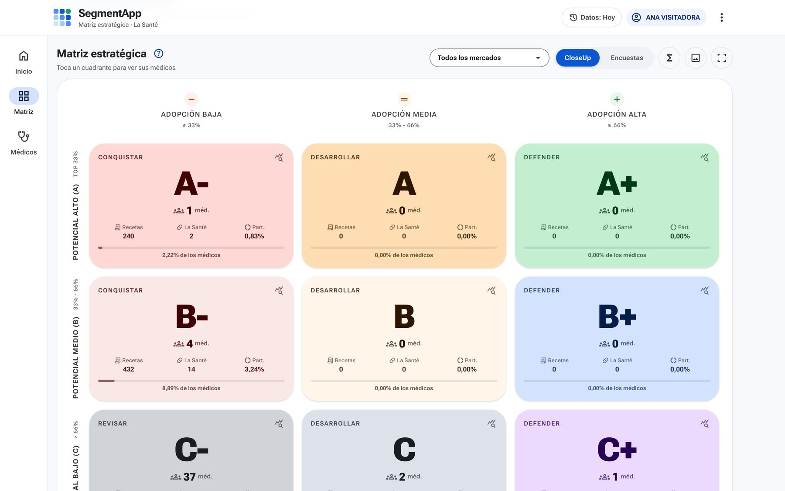
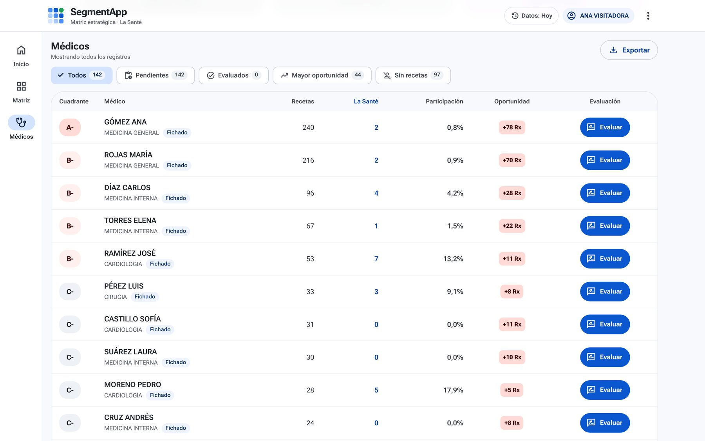
Sin recetas son médicos de tu fichero que no aparecen en CloseUp. El número de cada botón es cuántos hay.
| Columna | Qué dice |
|---|---|
| Cuadrante | Su casilla de la matriz. |
| Médico | Nombre, especialidad y si está Fichado. Tócalo para abrir su ficha. |
| Recetas · La Santé | Sus recetas del mercado y cuántas son nuestras. |
| Participación | La Santé ÷ recetas. |
| Oportunidad | Recetas de La Santé que le faltan (en rojo). |
| Evaluación | rate_reviewEvaluar abre la encuesta. |
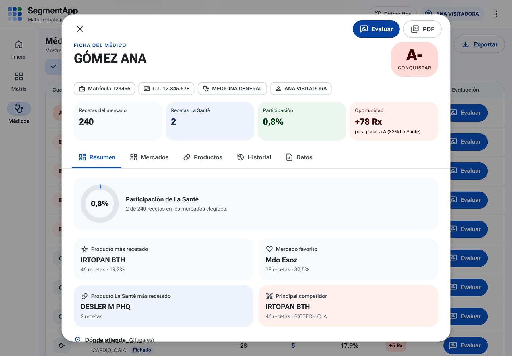
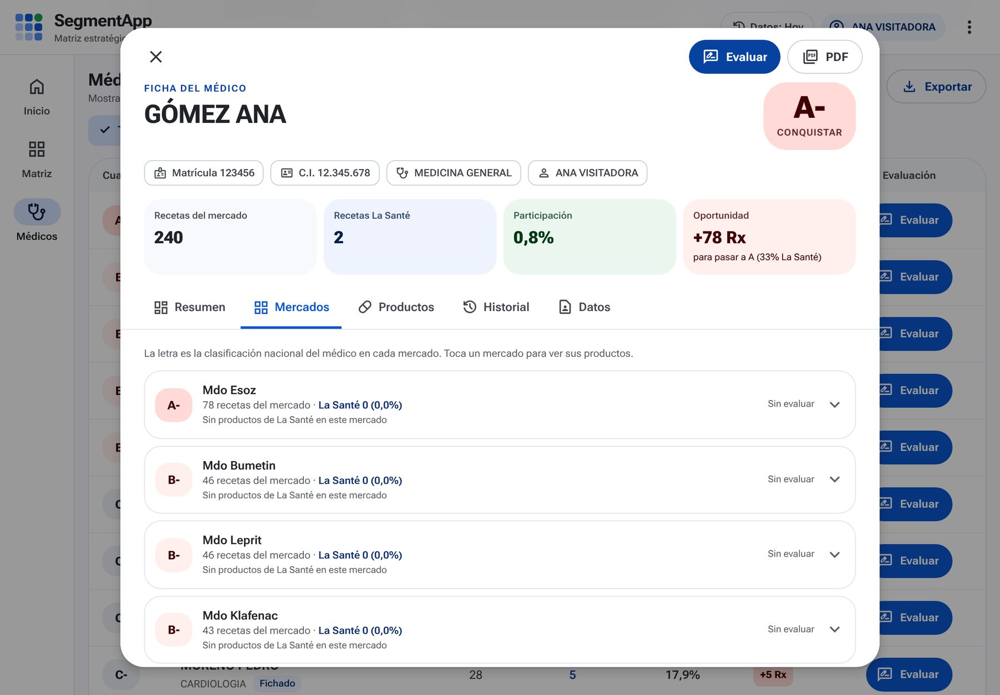
| Pestaña | Qué tiene |
|---|---|
| Resumen | Participación, producto más recetado, mercado favorito y principal competidor. |
| Mercados | Su letra en cada mercado, sus recetas y las de La Santé. Toca un mercado para ver sus productos. |
| Productos | Todo lo que receta, de 10 en 10. En azul, los de La Santé. |
| Historial | Cómo cambiaron sus recetas y tus evaluaciones. |
| Datos | Lo que dice el fichero: dirección, consultorio, teléfono… |
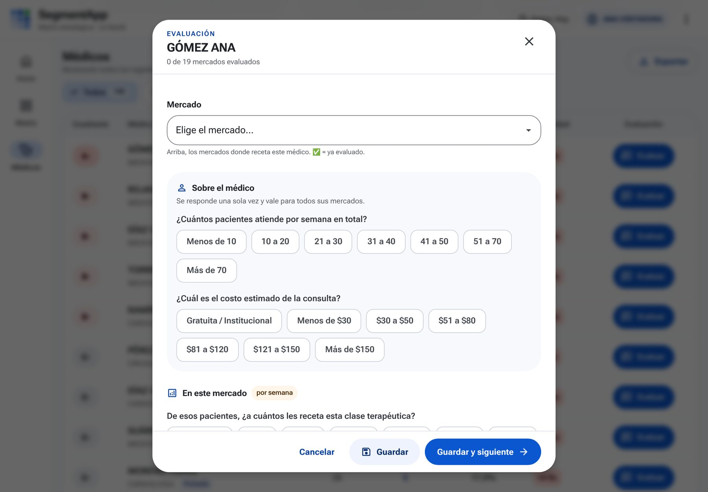
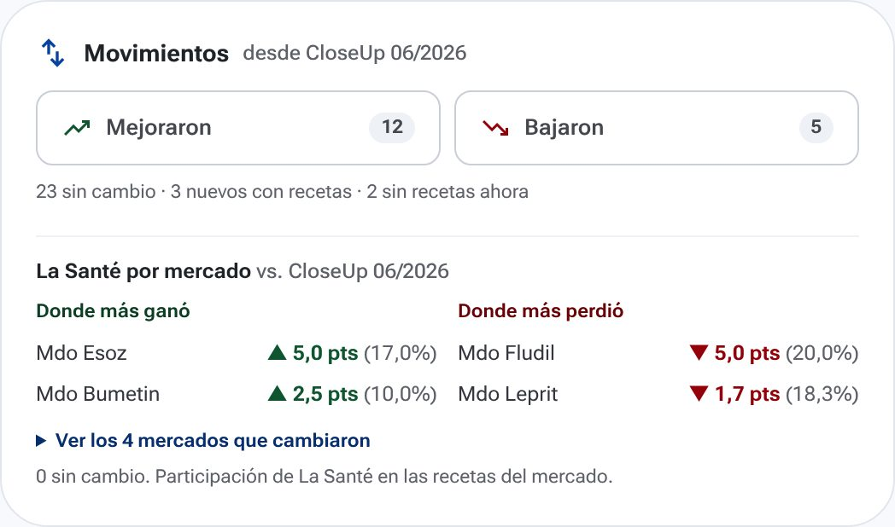
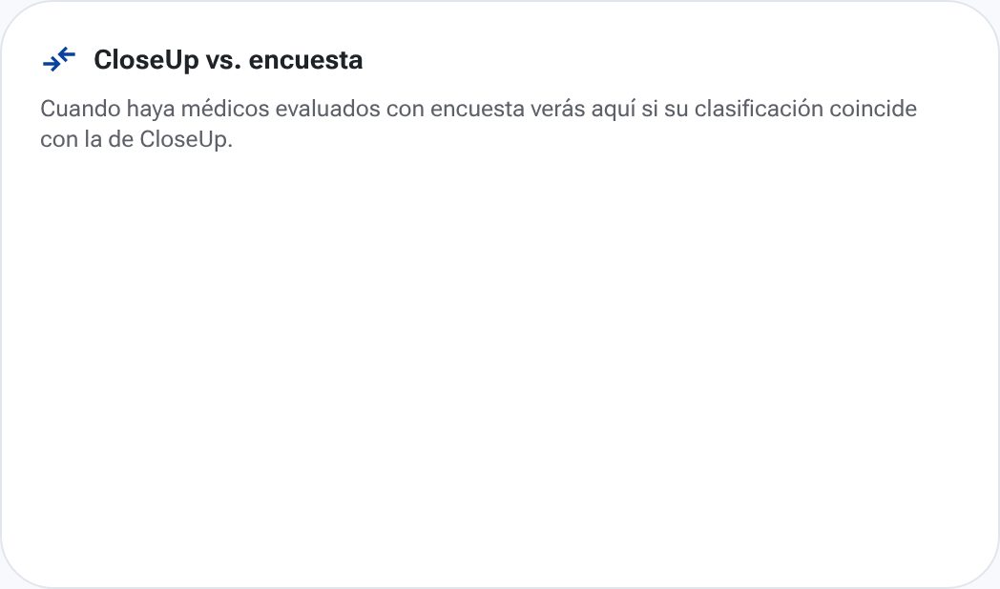
Las cifras de Movimientos son de ejemplo. La tarjeta CloseUp vs. encuesta se llena cuando ya evaluaste médicos.
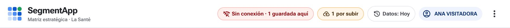
| Rx | Recetas. |
| CloseUp | Auditoría de recetas: cuánto receta cada médico de cada producto. |
| Fichero | Tu lista de médicos asignados (del CRM). |
| Mercado (Mdo) | Grupo de productos que compiten entre sí (ej. Mdo Esoz). |
| Participación | Recetas de La Santé ÷ recetas del mercado. |
| Potencial | La letra A, B o C: cuánto receta el médico. |
| Adopción | El signo −, (nada) o +: cuánto de eso es La Santé. |
| Oportunidad | Recetas de La Santé que le faltan para subir de adopción. |